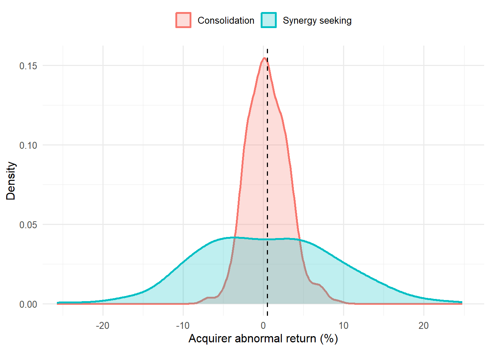

flowchart TB CS["Corporate strategy<br/>which businesses<br/>to be in"] BS["Business strategy<br/>how a business unit competes<br/>in its chosen market"] FS["Functional strategy<br/>how each function supports<br/>the business-level choice"] CS --> BS BS --> FS MK["Marketing"] MK -.->|"informs which markets have<br/>attractive customers"| CS MK -.->|"largely is the question of<br/>how to compete for customers"| BS MK -.->|"supplies the marketing mix<br/>that executes the plan"| FS
10 Marketing Strategy
Marketing strategy is the part of the field that asks how a firm wins, not how a consumer chooses. Where most of the book studies decisions one customer at a time, this chapter steps up a level of analysis to the firm, and asks how the firm creates value for customers, captures part of that value for itself, and sustains the arrangement against rivals who would rather it did not. Marketing strategy is the integrated pattern of decisions through which a firm does this: which markets to serve, which customers to win and keep, what to be known for, where to invest the marketing budget, and how to organize the people who execute it. The unifying test is performance. A marketing strategy is judged not by how clever it sounds but by the customer, financial, stock-market, and societal outcomes it produces (Varadarajan 2010; Neil A. Morgan et al. 2018).
This chapter is a teaching treatment of the field, complementing the doctoral reading map in Chapter 62. The seminar chapter is organized as a fourteen-week syllabus that pairs each topic with its identification challenge; this chapter develops the substantive theory in continuous prose, with two small runnable demonstrations. Two commitments run through both. The first is integration: a strategy is a coherent pattern, not a list of independent marketing-mix moves, even though most empirical work has studied the parts rather than the pattern (Neil A. Morgan et al. 2018). The second is accountability: the soft-sounding constructs of strategy, orientation, capability, culture, relationships, are repeatedly forced into contact with hard outcome data, because that contact is what turns a plausible story into a finding.
10.1 What Marketing Strategy Is
It helps to fix vocabulary first, because the field uses two phrases that are easily confused. Strategic marketing names the scholarly field: the study of how marketing contributes to firm strategy and performance. Marketing strategy names its object: the integrated pattern of choices a particular firm makes (Varadarajan 2010). A doctoral student needs both senses, but the second is the one with managerial bite.
10.1.1 Levels of strategy
Strategy is layered, and marketing sits at more than one layer. Corporate strategy decides which businesses the firm should be in. Business strategy (or competitive strategy) decides how a given business unit competes in its chosen market. Functional strategy, including marketing strategy in its narrow sense, decides how each function supports the business-level choice. Marketing is unusual among the functions in that it spans all three levels: it informs corporate choices about which markets have attractive customers, it largely is the business-level question of how to compete for those customers, and it supplies the functional programs (the marketing mix) that execute the plan. This is why marketing’s claim to a seat at the strategy table is contested but persistent: the function’s natural object, the customer and the market, is exactly the object that business-level strategy must get right. Figure 10.1 sketches the three levels and marketing’s span across them.
10.1.2 Strategy versus tactics
The cleanest way to separate strategy from tactics is by what each commits the firm to and for how long. Strategy is the small set of choices that are costly to reverse and that constrain everything downstream: which segment to target, what position to own, which capabilities to build. Tactics are the many adjustable moves, this quarter’s price, this campaign’s copy, this promotion’s depth, that execute a strategy and can be changed without changing the firm’s direction. The distinction is not a hierarchy of importance; a brilliant strategy with sloppy tactics fails, and disciplined tactics cannot rescue an incoherent strategy. It is a distinction of reversibility and scope. A useful diagnostic question is: if this decision turns out wrong, how long and how expensive is the path back? Choices with long, expensive paths back are strategic and deserve the deliberation the rest of this chapter describes.
10.1.3 The dependent variable
Because the field is defined by accountability, its recurring dependent variable is firm performance, and that variable has conceptual layers worth separating (Katsikeas et al. 2016; Neil A. Morgan 2012). Closest to marketing actions are customer-mindset outcomes (awareness, satisfaction, loyalty intentions). These feed marketplace outcomes (market share, sales, customer retention), which feed accounting outcomes (margins, cash flow, return on assets), which the capital market prices into financial-market outcomes (stock returns, firm value, risk). Much of the field’s progress has come from tracing this chain link by link, and much of its difficulty comes from the fact that causation can run backward along it (profitable firms can afford more marketing) and that omitted firm-quality variables can drive several links at once. Figure 10.2 draws the chain alongside both threats to reading it causally.
flowchart LR CM["Customer-mindset outcomes<br/>awareness, satisfaction,<br/>loyalty intentions"] MP["Marketplace outcomes<br/>market share, sales,<br/>customer retention"] AC["Accounting outcomes<br/>margins, cash flow,<br/>return on assets"] FN["Financial-market outcomes<br/>stock returns, firm value,<br/>risk"] CM --> MP MP --> AC AC --> FN AC -.->|"profitable firms can<br/>afford more marketing"| CM FQ["Omitted firm quality"] FQ -.-> CM FQ -.-> AC FQ -.-> FN
10.2 Market Orientation
If marketing strategy has a single foundational construct on the implementation side, it is market orientation: the degree to which a firm actually organizes itself around its customers and competitors rather than merely professing to. Two papers in 1990 defined the construct in complementary ways, and the field has spent three decades measuring it and testing whether it pays.
10.2.1 The behavioral view and the cultural view
Kohli and Jaworski (1990) give the behavioral conceptualization. They define market orientation as “the organizationwide generation of market intelligence pertaining to current and future customer needs, dissemination of the intelligence across departments, and responsiveness to it.” The achievement of this definition is that it decomposes a vague cultural posture into three observable behaviors, intelligence generation, dissemination, and responsiveness, and thereby makes the construct measurable (the MARKOR scale follows directly from it). Profitability is deliberately placed as a consequence of orientation, not a part of it, which keeps the construct clean enough to serve as a regressor against performance. The seminar chapter develops this decomposition in detail in Section 62.17.1.
Narver and Slater (1990) give the cultural conceptualization. They define market orientation as the organizational culture that most effectively creates the behaviors needed for superior value, and they decompose it into three components, customer orientation, competitor orientation, and interfunctional coordination, plus two decision criteria (long-term focus and profitability). Their MKTOR scale operationalizes this view, and their paper supplied the first direct test linking orientation to business profitability.
The two views are less rival than layered: culture (Narver and Slater) is the disposition, and behavior (Kohli and Jaworski) is its enactment. A firm can hold customer-oriented values yet fail to generate or act on intelligence; the behavioral view measures whether the disposition actually shows up in routines.
10.2.2 Does market orientation pay, and when?
The headline empirical question is whether more market-oriented firms perform better, and the meta-analytic verdict is a qualified yes. Kirca, Jayachandran, and Bearden (2005) synthesize the accumulated studies and find a positive, robust association between market orientation and performance, but one whose size depends on the setting. The link is stronger when performance is measured by managerial judgment than by objective financials, stronger in studies using cost-based rather than revenue-based outcomes, and moderated by national culture and industry. The honest reading is that market orientation is necessary but not sufficient: it is a precondition for converting market knowledge into value, but its payoff is contingent on the capabilities (next section) that turn knowledge into action and on the competitive context that determines how much customer focus is rewarded. A second meta-analysis (Rodriguez Cano, Carrillat, and Jaramillo 2004) reaches a compatible verdict on the salesperson-level version of the same relationship, which matters because it locates part of the firm-level effect in individual behaviour rather than in structure.
Two qualifications are worth carrying forward. The first is that market orientation is one strategic orientation among several — technology, entrepreneurial, and learning orientations compete for the same organizational attention — and Noble, Sinha, and Kumar (2002) find that the alternatives sometimes dominate depending on the environment, so a firm maximizing market orientation alone may be optimizing the wrong variable. The second is sharper: Kumar et al. (2011) question whether market orientation can be a source of sustainable competitive advantage at all, given that it is observable, imitable, and widely taught. The construct may be a threshold condition — costly to lack, insufficient to win on.
This sets up the field’s signature identification worry. A cross-sectional correlation between orientation and profit is consistent with orientation causing profit, with profit funding orientation, or with some omitted quality (good management, slack resources) causing both. Two methodological papers are worth reading alongside any such regression: Rindfleisch et al. (2008) set out what a cross-section can and cannot establish relative to a panel in exactly this literature, and Sande and Ghosh (2018) treat endogeneity in survey research directly, including the instrument-free approaches available when no credible instrument exists. The demonstration below uses simulated data to show what an honest analyst can and cannot conclude from such a regression, and how a moderator changes the picture.
10.2.3 A simulated market-orientation to performance regression
The following chunk simulates a cross-section of firms, generates performance as a function of market orientation and a moderator (competitive intensity), and then recovers the relationship. The data-generating process is known, so we can see exactly what the regression is estimating. The substantive point is that the return to market orientation is larger where competition is fiercer: customer focus matters most when customers have alternatives.
Code
suppressPackageStartupMessages({library(dplyr); library(ggplot2)})
set.seed(2024)
n <- 600
firms <- tibble(
# market orientation (standardized index, e.g. MARKOR/MKTOR)
mo = rnorm(n, 0, 1),
# competitive intensity moderator (0 = sheltered, 1 = cut-throat)
intensity = runif(n, 0, 1),
# an omitted "firm quality" that raises BOTH mo and performance
quality = rnorm(n, 0, 1)
)
# true model: MO helps, and helps MORE under high competitive intensity;
# firm quality confounds the naive association.
firms <- firms %>%
mutate(
mo_obs = mo + 0.5 * quality, # quality inflates MO
perf = 0.30 * mo_obs + # baseline MO effect
0.60 * mo_obs * intensity + # moderation
0.80 * quality + # confound
rnorm(n, 0, 1)
)
# (1) naive regression: omits quality -> MO effect is biased upward
naive <- lm(perf ~ mo_obs, data = firms)
# (2) moderated regression controlling for quality -> recovers structure
moderated <- lm(perf ~ mo_obs * intensity + quality, data = firms)
round(rbind(
naive = c(coef(naive)["mo_obs"], NA, NA),
moderated = coef(moderated)[c("mo_obs", "intensity", "mo_obs:intensity")]
), 3)
#> mo_obs
#> naive 0.923 NA NA
#> moderated 0.239 0.261 0.712The naive slope on market orientation is inflated because it absorbs the omitted firm-quality effect; the moderated specification, once quality is controlled, recovers a positive main effect and a positive interaction, the return to market orientation rises with competitive intensity. Figure 10.3 plots the fitted performance-orientation slope at low and high competitive intensity to make the moderation visible.
Code
grid <- expand.grid(
mo_obs = seq(-2.5, 2.5, length.out = 50),
intensity = c(0.15, 0.85),
quality = 0
)
grid$perf <- predict(moderated, newdata = grid)
grid$Intensity <- factor(grid$intensity,
labels = c("Low competitive intensity",
"High competitive intensity"))
ggplot(grid, aes(mo_obs, perf, colour = Intensity)) +
geom_line(linewidth = 1.1) +
labs(x = "Market orientation (standardized)",
y = "Predicted firm performance",
colour = NULL) +
theme_minimal(base_size = 12) +
theme(legend.position = "top")
The lesson generalizes well beyond this toy: a positive average effect can hide substantial heterogeneity, and the moderators (here, competition; in the literature, also market turbulence and national culture) are often the managerially interesting part of the answer.
10.3 Resources, Capabilities, and Sustainable Advantage
Market orientation tells the firm to listen to the market; it does not, by itself, explain why some firms convert what they hear into durable advantage and others do not. For that the field reaches to theories of competitive advantage, and the dominant one is the resource-based view (RBV).
10.3.1 The resource-based view and resource-advantage theory
The RBV holds that sustained advantage comes from resources that are valuable, rare, imperfectly imitable, and non-substitutable (the VRIN tests), and that are embedded in an organization able to exploit them (Wernerfelt 1984). The insight is that resources easily bought or copied cannot support advantage for long, because competitors acquire or replicate them; advantage must rest on resources that resist the market for resources itself. Marketing’s contribution to the RBV is the observation that its most important assets, brand equity, customer relationships, channel ties, market knowledge, are precisely the off-balance-sheet, relationship- and knowledge-based resources that best pass the VRIN tests, a point developed as the market-based assets framework (Srivastava, Shervani, and Fahey 1998) and treated at length in Chapter 24.
Marketing has also produced its own theory of competition. Hunt and Morgan (1995) propose resource-advantage theory (originally the comparative-advantage theory of competition), an evolutionary, disequilibrium alternative to the equilibrium models of industrial-organization economics. In their account, firms compete by seeking comparative advantages in resources that yield marketplace positions of competitive advantage and, in turn, superior financial performance; competition is the ongoing, never-settled process of firms trying to neutralize or leapfrog one another’s resource advantages. The contrast with equilibrium IO is the heart of a recurring seminar debate: are marketing resources truly inimitable sources of lasting rents, or transient advantages constantly eroded by imitation? R-A theory’s answer is that the process of seeking advantage, not any particular static advantage, is what marketing strategy is about.
10.3.2 Marketing capabilities and dynamic capabilities
Resources are inert without the routines that deploy them, and those routines are capabilities. Day (1994) gives the canonical typology of the capabilities of market-driven organizations: outside-in capabilities (market sensing, customer linking, channel bonding) that connect the firm to its environment; inside-out capabilities (manufacturing, logistics, financial management) that are activated by market needs; and spanning capabilities (new-product development, pricing, purchasing, service delivery) that integrate the two. A market-driven firm is one whose outside-in capabilities are strong enough to guide the rest.
Vorhies and Morgan (2005) turn this typology into measurement, showing that distinct marketing capabilities (in pricing, product development, channel management, marketing communications, selling, market information management, and marketing planning and implementation) can be benchmarked and that firms whose capabilities exceed benchmarks perform better. Krasnikov and Jayachandran (2008) then run the horse race that matters for resource allocation: in a meta-analysis comparing marketing, R&D, and operations capabilities, marketing capabilities have the largest relative impact on firm performance, a finding that pushes back on the engineering-centric view that R&D and operations are where advantage is built. Crucially, market orientation and marketing capabilities are complements, not substitutes: orientation supplies the knowledge that capabilities convert into market position (Neil A. Morgan and Rego 2009).
The frontier worry is that static capabilities decay as markets change. Dynamic capabilities, the firm’s capacity to sense opportunities, seize them, and reconfigure its resource base, address strategy under change (Teece, Pisano, and Shuen 1997). Day (2011) brings this into marketing with the marketing capabilities gap: the routines most firms have were built for a stable, push-marketing world and lag the adaptive, outside-in capabilities (vigilant market learning, adaptive experimentation, open networking) that turbulent digital markets reward. The managerial implication is that capability is a moving target; the resource-based test for sustainability must be re-run as the environment shifts.
10.4 Competitive Strategy and Positioning
Having decided to compete, the firm must decide how. The classic marketing answer is the segmentation, targeting, and positioning (STP) sequence. Segmentation partitions a heterogeneous market into groups of customers with similar needs and responses. Targeting selects which segments the firm’s resources and capabilities let it serve profitably and defensibly. Positioning designs and communicates a distinctive place in the minds of target customers, the position the firm intends to own.
Underlying STP is differentiation: the firm must give target customers a reason to prefer it that rivals cannot easily match. Differentiation can rest on the product, the brand, the service, the channel, or the relationship, but the strategic test is always the same VRIN test from the RBV, a basis of differentiation confers durable advantage only if it is valuable to customers and costly for rivals to imitate. This is why Day and Wensley (1988) insist on separating the sources of advantage (superior skills and resources) from the positions of advantage they produce (superior customer value or lower relative cost) from the performance outcomes that follow (satisfaction, loyalty, share, profitability). Confusing the three is the most common analytic error in positioning research: a firm with high share (a position) is not thereby shown to have a superior capability (a source), because the causal arrow can run either way. Figure 10.4 separates the three layers.
flowchart LR SO["Sources of advantage<br/>superior skills<br/>and resources"] PO["Positions of advantage<br/>superior customer value<br/>or lower relative cost"] PF["Performance outcomes<br/>satisfaction, loyalty,<br/>share, profitability"] SO --> PO PO --> PF PO -.->|"the causal arrow can<br/>run either way"| SO
Competitive dynamics adds the recognition that positions are contested in real time. Rivals respond to attacks, match price cuts, copy features, and counter- position, so a position’s value depends on how rivals will react, not only on how customers will. The strategic question is therefore not merely “what position do we want?” but “what position can we hold given how competitors will respond?”, which is where R-A theory’s disequilibrium view (Hunt and Morgan 1995) and the dynamic-capabilities view (Teece, Pisano, and Shuen 1997; Day 2011) re-enter: a defensible position is one anchored to a capability rivals cannot quickly reconfigure to match.
10.5 The Marketing-Finance Interface: The Accountability Turn
The most consequential development in marketing strategy over the last quarter century is the accountability turn: the insistence that marketing demonstrate its value in the language the boardroom and the capital market actually use, cash flow, firm value, and risk. This is the subject of its own chapter (Chapter 24); here we give the strategic logic and a panel demonstration.
The turn was partly a response to an internal criticism worth reading in the original. Reibstein, Day, and Wind (2009) argued that marketing academia had drifted toward problems that were tractable rather than important, and that the field’s declining influence on practice was a consequence rather than an accident. It is a useful counterweight to this chapter’s methodological emphasis: identification discipline is necessary, but a well-identified answer to a question no one is asking is not a contribution.
10.5.2 A simulated marketing-assets to firm-value panel
The following chunk illustrates, on simulated panel data, the workhorse Tobin’s \(q\) regression of the interface: firm value regressed on a marketing asset (here a brand- equity index) with firm and year fixed effects and the standard financial controls (leverage and cash flow). Fixed effects absorb time-invariant firm quality, so the estimate comes from within-firm variation in the asset over time, the design that makes the marketing-to-value claim credible rather than merely correlational. This reuses the kind of machinery developed in Chapter 24.
Code
suppressPackageStartupMessages({library(dplyr)})
set.seed(7)
n_firm <- 120; n_year <- 8
firm_fe <- rnorm(n_firm, 0, 0.40) # time-invariant firm quality
year_fe <- rnorm(n_year, 0, 0.10)
panel <- expand.grid(firm = 1:n_firm, year = 1:n_year) %>%
mutate(
brand_equity = 0.6 * firm_fe[firm] + rnorm(n(), 0, 1), # quality raises BE
leverage = runif(n(), 0, 0.6),
cash_flow = rnorm(n(), 0, 1),
# true within-firm effect of brand equity on Tobin's q is 0.25
tobin_q = 1.2 + firm_fe[firm] + year_fe[year] +
0.25 * brand_equity - # the strategic effect of interest
0.40 * leverage +
0.15 * cash_flow +
rnorm(n(), 0, 0.30)
)
# Pooled OLS (no FE) overstates the effect: it confounds within- and between-firm
pooled <- lm(tobin_q ~ brand_equity + leverage + cash_flow, data = panel)
# Two-way fixed-effects: identify from WITHIN-firm changes in brand equity
fe <- lm(tobin_q ~ brand_equity + leverage + cash_flow +
factor(firm) + factor(year), data = panel)
round(c(pooled_BE = coef(pooled)["brand_equity"],
FE_BE = coef(fe)["brand_equity"],
truth = 0.25), 3)
#> pooled_BE.brand_equity FE_BE.brand_equity truth
#> 0.326 0.242 0.250The pooled estimate is biased upward because it mixes the genuine within-firm effect with the cross-firm correlation that firm quality induces between brand equity and \(q\); the two-way fixed-effects estimate, which uses only within-firm variation, recovers the true 0.25 elasticity. This is the strategic content of the interface in one line: marketing builds an asset, and a credibly identified panel shows that the asset is priced into the value of the firm. The unresolved debate is whether marketing creates that value or merely signals pre-existing quality, and whether fixed effects and instruments fully purge the reverse-causality and omitted-quality threats (Srinivasan and Hanssens 2009; Edeling, Srinivasan, and Hanssens 2021).
10.6 Marketing Organization, the CMO, and Accountability
Strategy is executed by an organization, and how marketing is organized, and how much influence it wields, is itself a strategic variable. The marketing function’s influence inside the firm rose with the marketing concept and has been contested ever since, with periodic claims that it is declining as analytics, finance, and product functions absorb customer responsibility.
Verhoef and Leeflang (2009) ask what actually drives the marketing department’s clout and find that it rests on accountability (the ability to demonstrate marketing’s financial contribution), innovativeness, and a credible connection to the customer, not on budget size or headcount. The implication is pointed: the accountability turn is not only an intellectual movement but the practical price of marketing’s seat at the strategy table. Departments that cannot speak the language of firm value lose influence to those that can.
Moorman and Day (2016) give the modern integrative framework, defining marketing excellence as “a superior ability to perform essential customer-facing activities that improve customer, financial, stock market, and societal outcomes” and resting it on four organizational elements (capabilities, configuration, human capital, and culture) mobilized through seven activities. This MARORG framework is developed as a worked capability theory in Section 62.17.2.
The sharpest test of marketing’s organizational value is the chief marketing officer. Does having a CMO in the top management team improve performance? The natural design compares firms with and without a CMO (Nath and Mahajan 2008), and the cleanest estimate finds firms with a CMO exhibit roughly 15% higher Tobin’s \(q\) (Germann, Ebbes, and Grewal 2015). But CMO presence is not randomly assigned, so the credible design combines firm fixed effects (identifying from within-firm changes in CMO presence) with instrumental variables (whose exclusion restriction is the untestable assumption on which the causal claim rests). The seminar chapter develops this as a worked identification example in Section 62.17.5, and it is the template for the whole field: a strategic construct becomes a finding only when its estimator and identifying assumptions are stated in full.
Underpinning all of this is measurement. Katsikeas et al. (2016) map the space of marketing performance outcomes (customer-mindset, marketplace, accounting, financial-market), and the recurring empirical result is that the ability to measure marketing is itself associated with performance and with executives’ confidence in the function. Whether measurement causes performance or better firms simply measure more is the same endogeneity question in a new guise.
10.7 Innovation and Growth Strategy
Growth is the strategic objective that most directly tests a firm’s resource base, and innovation is its primary engine. The strategic questions are who innovates radically, whether radical innovation pays, and how a firm can keep exploiting today’s business while exploring tomorrow’s.
The intuition that large incumbents cannot innovate radically turns out to be overstated. Chandy and Tellis (2000) show, against the “incumbent’s curse” assumption, that incumbents and large firms have introduced a substantial share of radical product innovations, especially in some eras and industries; the curse is contingent, not a law. Innovation’s payoff is also two-dimensional: it affects both the level of firm value and its risk, and radical and incremental innovations differ in how they move each, so a complete strategic assessment of an innovation portfolio must weigh return against the volatility it introduces.
The deeper organizational problem is ambidexterity: the firm must simultaneously exploit existing competencies (refining today’s products, serving today’s customers) and explore new ones (radical innovation, new markets), even though the two demand opposed structures, cultures, and metrics. Exploitation rewards efficiency, control, and incrementalism; exploration rewards slack, autonomy, and tolerance of failure. The dynamic-capabilities view (Teece, Pisano, and Shuen 1997; Day 2011) frames ambidexterity as the higher-order capability of reconfiguring the resource base, and it connects growth strategy back to the chapter’s spine: the firms that sustain advantage are those whose capabilities let them keep changing what they are good at.
10.8 Corporate Development: Acquisitions, Alliances, and Divestitures
The chapter has so far treated the resource base as something the firm builds: market orientation generates knowledge, capabilities convert it, dynamic capabilities reconfigure it. But firms also buy and sell resources outright. Corporate development, the acquisition, alliance, and divestiture decisions through which a firm changes what it owns, is where the resource-based view of Section 10.3 confronts an actual market for resources, and it is where marketing strategy’s claims are tested at their most expensive. A single acquisition can commit more capital than a decade of advertising, and by the reversibility criterion of Section 10.1 it is the most strategic decision a firm makes. This section develops the strategy-side logic of that decision; Chapter 24 treats the same events through the valuation machinery of the event study, and the two should be read together.
The organizing claim is that corporate development is best understood as a chain rather than a decision. A firm first chooses a mode of resource combination, then forms a motive for the particular deal, then designs an integration that either realizes or destroys the motive’s premise, all under an ownership and stakeholder structure that determines who captures whatever value results. Most of the literature’s apparent contradictions dissolve once studies are located on this chain, because a variable that matters at one link is noise at another. Figure 10.5 lays out the sequence and the moderators that attach to each link.
flowchart TB MODE["Mode choice<br/>build, ally, buy,<br/>or sell"] MOTIVE["Deal motive<br/>consolidation, growth,<br/>capability, or option"] INTEG["Integration design<br/>degree, speed,<br/>autonomy"] DIST["Distribution of<br/>performance<br/>mean and spread"] MODE --> MOTIVE MOTIVE --> INTEG INTEG --> DIST REL["Resource relatedness<br/>and prior experience"] ATT["Managerial attention<br/>to candidate synergies"] CULT["Cultural fit and<br/>employee resistance"] OWN["Ownership structure<br/>and stakeholder ties"] REL -.-> MODE ATT -.-> MOTIVE CULT -.-> INTEG OWN -.-> DIST
10.8.1 The mode choice: build, ally, buy, or sell
The first link is the most often assumed away. Empirical work typically studies acquisitions alone, or alliances alone, and estimates what predicts the observed mode; but a firm that acquires has by construction declined to ally, to build internally, and to divest, so any determinant of acquisition estimated in isolation is contaminated by the unmodeled availability of the alternatives. Villalonga and McGahan (2005) make this the object of study rather than a nuisance, modeling the choice among acquisitions, alliances, and divestitures jointly. Their finding is that the modes are governed by a common logic of resource fit and experience: firms select the mode whose governance costs are lowest given the relatedness of the resources involved and their own accumulated experience with that mode. The methodological lesson generalizes far beyond corporate development, and is the same lesson the CMO literature learned in Section 10.6: a strategic choice is a selection, and estimating its consequences requires modeling why it was selected.
Wang and Zajac (2007) sharpen this by insisting the choice is a property of the pair, not of the acquirer. In their dyadic account, alliance and acquisition are alternative solutions to the same problem of combining two firms’ resources, and which solution appears depends on both parties’ resource profiles and on the relative bargaining position each brings. A resource combination that looks like an acquisition from the acquirer’s balance sheet may have been an alliance from the target’s perspective until the target’s outside options thinned. This is the combination-mode analogue of the sources-versus-positions distinction drawn by Day and Wensley (1988), in that the observed mode is a position, and inferring the underlying resource logic from it requires care.
Capron and Shen (2007) add the informational dimension. Acquirers of private targets face far greater information asymmetry than acquirers of public ones, and the asymmetry cuts both ways: it raises the risk of overpaying for an unobservable lemon, but it also means that a bidder with privileged private information can buy an asset the rest of the market cannot price. Their finding, that acquirers with prior experience and relevant knowledge select private targets and earn higher returns from them, is the mode-choice link’s version of the resource-based prediction, an advantage in evaluating a resource is itself a resource.
10.8.2 Does acquisition pay? From the average to the distribution
The second question is the one the field has argued about longest, and the answer has changed shape. The early accumulation of event studies produced a rough consensus, catalogued in Table 24.3 of Chapter 24, that targets gain and acquirers roughly break even, with relatedness usually but not always associated with larger gains. Datta, Pinches, and Narayanan (1992) formalize that accumulation in a meta-analysis of the factors influencing wealth creation, finding systematic effects for deal characteristics but far more unexplained variance than a well-behaved literature should have.
Barney (1988) supplies the theoretical reason the variance is there, and it is the single most important idea in this section. Relatedness cannot by itself produce bidder gains, because if a related combination generates synergy that any related bidder could generate, then competition among bidders in the market for corporate control transfers the entire synergy to the target’s shareholders through the acquisition premium. Bidders earn returns only when their synergy with a particular target is unique, not merely related, and privately known. This is the VRIN logic of Section 10.3 applied to the market for firms, and it reframes the empirical question: the interesting variable is not whether the firms are similar but whether the acquirer’s synergy is inimitable and unpriced. It also explains why the similarity-versus-complementarity debate has never resolved, since both similarity and complementarity can be either common knowledge or private, and only the private version pays.
King et al. (2004) bring the accumulated evidence to its uncomfortable conclusion. Meta-analyzing post-acquisition performance across the standard moderators, relatedness, method of payment, prior acquisition experience, they find no significant positive average effect on acquirer performance, and, more tellingly, residual variance too large for the identified moderators to explain. Their title names the diagnosis: the moderators that matter have not been identified. The review literature has since organized what remains unexplained rather than resolving it, with Haleblian et al. (2009) mapping the antecedents and consequences of acquisition activity, and Devers et al. (2020) charting the behavioral turn toward the perceptions, emotions, and cognitive limits of the executives who actually make these decisions.
Rabier (2017) offers the most productive response, and it is a response about the shape of the outcome rather than its mean. Classifying deals by motive, she shows that acquisition motives shift not only the average of acquisition performance but its entire distribution: deals motivated by synergy seeking exhibit both higher upside and heavier downside than deals motivated by consolidation or efficiency. A literature that reports means will therefore find nothing while a genuine and managerially crucial effect sits in the second and higher moments. The simulation below makes the mechanism concrete, because it is easy to state and easy to miss.
Code
suppressPackageStartupMessages({library(dplyr); library(ggplot2)})
set.seed(1988)
# A realistically sized acquisition sample (event studies rarely exceed
# a few hundred usable deals).
n <- 600
# Two motive populations, pooled in the data an analyst actually observes.
# Consolidation deals: modest but reliable cost synergies (small mean, tight).
# Synergy-seeking deals: uncertain growth synergies (no better on average,
# far wider spread) -- the Rabier (2017) distributional claim.
deals <- tibble(
motive = rep(c("Consolidation", "Synergy seeking"), each = n / 2),
car = c(rnorm(n / 2, mean = 0.5, sd = 2.5),
rnorm(n / 2, mean = 0.0, sd = 9.0))
)
# (1) The average-effect test a mean-based literature would run
pooled_t <- t.test(car ~ motive, data = deals)
# (2) The same data described by moment and by tail
by_motive <- deals %>%
group_by(motive) %>%
summarise(mean = mean(car), sd = sd(car),
p10 = unname(quantile(car, 0.10)),
p90 = unname(quantile(car, 0.90)),
.groups = "drop")
# (3) Who actually occupies the extremes of the POOLED distribution?
# (composition of each tail, not each motive's own tail rate)
cut_lo <- quantile(deals$car, 0.05); cut_hi <- quantile(deals$car, 0.95)
tails <- c(
synergy_share_of_worst_5pct = mean(deals$motive[deals$car <= cut_lo] == "Synergy seeking"),
synergy_share_of_best_5pct = mean(deals$motive[deals$car >= cut_hi] == "Synergy seeking")
)
list(
mean_test = round(c(difference = unname(-diff(pooled_t$estimate)),
t_stat = unname(pooled_t$statistic),
p_value = pooled_t$p.value), 3),
by_motive = as.data.frame(by_motive) %>% mutate(across(where(is.numeric), ~round(.x, 2))),
tail_make_up = round(tails, 3)
)
#> $mean_test
#> difference t_stat p_value
#> 0.025 0.050 0.960
#>
#> $by_motive
#> motive mean sd p10 p90
#> 1 Consolidation 0.50 2.52 -2.42 3.59
#> 2 Synergy seeking 0.48 8.32 -9.63 11.46
#>
#> $tail_make_up
#> synergy_share_of_worst_5pct synergy_share_of_best_5pct
#> 1 1The mean difference is negligible and nowhere near significance; a meta-analysis pooling studies like this would report exactly the null that King et al. (2004) report. Yet synergy-seeking deals carry more than three times the standard deviation, and they account for every deal in both the worst and the best five percent of the pooled sample. An entire literature could conclude that acquisition motive does not matter while motive in fact determines who ends up in the tails. Figure 10.6 draws the two distributions with the pooled mean marked, which is the picture a mean-based literature never produces.
Code
ggplot(deals, aes(car, fill = motive, colour = motive)) +
geom_density(alpha = 0.25, linewidth = 0.9) +
geom_vline(xintercept = mean(deals$car), linetype = "dashed") +
coord_cartesian(xlim = c(-25, 25)) +
labs(x = "Acquirer abnormal return (%)",
y = "Density", fill = NULL, colour = NULL) +
theme_minimal(base_size = 12) +
theme(legend.position = "top")
The lesson is the distributional counterpart of the moderation lesson from Section 10.2. There, a positive average hid heterogeneity in the slope; here, a null average hides heterogeneity in the spread. A field that asks only “does it pay on average?” will declare a phenomenon dead while its most important variation is still unexamined, and the corrective is to report quantiles, variances, and tail shares alongside means.
10.8.3 Motive as the master variable
If motive governs the distribution, the natural next question is where motives come from and whether they can be observed. Three recent contributions attack this from different directions.
Bauer and Friesl (2024) treat pre-deal synergy evaluation as a cognitive act rather than a valuation exercise. In their attention-based account, managers do not evaluate all candidate synergies and select the best; they evaluate the synergies their attention structures make salient, and the firm’s existing routines, recent experiences, and organizational identity determine what those are. The consequence is that synergy estimates are systematically incomplete in patterned rather than random ways, which explains both why cost synergies are chronically over-represented in deal rationales (they are legible, quantifiable, and attributable to identifiable line items) and why revenue and capability synergies are chronically underestimated. For a marketing audience this is a pointed finding: the synergies marketing is best placed to deliver, cross-selling into a combined customer base, brand-portfolio consolidation, channel access, are precisely the ones that attention structures dominated by finance and operations are least likely to surface.
Feldman and Hernandez (2022) give the construct the theoretical treatment it had been missing. They distinguish synergy types by source and trace each type’s life cycle, arguing that synergies differ in how quickly they can be realized, how long they persist, and how much of their value accrues to the acquirer rather than leaking to the target’s shareholders or to customers. The life-cycle framing matters for empirical design: a study whose window is three days after announcement measures investor beliefs about fast-realizing synergies, while a study whose window is three years measures realized slow synergies net of integration costs, and the two need not agree even when both are correct.
Piezunka et al. (2026) add the observation that a firm’s motives are read by third parties who then act on their reading. Studying what happens to a target’s external collaborators after an acquisition, they show that collaboration post-acquisition depends on the acquirer’s motives: collaborators who infer that the acquirer intends to absorb and redirect the target withdraw, while collaborators who infer a capability-preserving motive stay. The target’s relational assets, in other words, are not transferred by the purchase agreement; they are re-negotiated with every partner, and the acquirer’s perceived intent is the term of that negotiation. This is the corporate-development instance of a general marketing truth, that relationships are held by counterparties, not by owners.
10.8.4 Integration: degree, speed, and the marketing content of the deal
Motive is a premise; integration either delivers it or does not. The integration literature is the largest in corporate development, and marketing has contributed to it directly.
Homburg and Bucerius (2005) bring the marketing function into the picture explicitly, studying how marketing integration, the consolidation of brands, sales forces, product lines, and customer-facing processes, affects postmerger performance. Their result is that marketing integration matters through two conflicting channels: it generates cost savings and market-power gains, but it also disrupts customer relationships and internal marketing capability during the transition. The net effect is therefore contingent rather than uniformly positive, and the contingency is a marketing variable.
Homburg and Bucerius (2006) then take on the folk wisdom that faster integration is better. The received managerial view holds that a long integration is a long period of uncertainty, so speed limits damage. They show this is contingent on two kinds of relatedness. Where external relatedness is high, the merging firms serve similar markets and customers, so speed pays because the market-facing benefits of combination arrive sooner and the window of customer confusion is short. Where internal relatedness is high, the firms have similar internal structures and processes, and speed hurts, because rapid consolidation of overlapping internal systems destroys the tacit knowledge and routines that made each firm work. Speed is therefore not a success factor but a decision variable whose optimum depends on where the relatedness sits, which is why the literature that treated it as a main effect produced conflicting results.
Bauer and Matzler (2014) provide the integrative test, modeling strategic complementarity, cultural fit, and the degree and speed of integration together rather than one at a time. Their central finding is that these antecedents are not additive: complementarity and cultural fit set the ceiling on what integration can achieve, and degree and speed determine how much of that ceiling is reached, with the wrong combination of high degree and poor cultural fit actively destroying value. The cultural channel has a long lineage. Chatterjee et al. (1992) showed that perceived cultural differences between merging firms predict lower shareholder value in related mergers, linking equity effects to human capital, and Larsson and Finkelstein (1999) established that synergy realization depends jointly on combination potential, the extent of integration, and the absence of employee resistance, which is the organizational precondition that complementarity alone cannot supply.
The learning literature explains how firms get better at this. Zollo and Singh (2004) show that acquisition performance improves not with raw experience but with deliberate learning: firms that explicitly codify what they learned from past integrations, into manuals, checklists, and playbooks, build an integration capability, while firms that merely accumulate deals do not. This is a clean instance of the dynamic-capabilities argument of Teece, Pisano, and Shuen (1997), and it carries a sharp managerial implication: experience is only a resource once it has been articulated.
Two papers resolve what integration should actually be integrated. Puranam, Singh, and Zollo (2006) identify the coordination-autonomy dilemma in technology acquisitions: structural integration improves coordination between acquirer and target but destroys the target’s autonomy and thereby its innovative output, and the resolution depends on whether the target’s innovation trajectory was already established at the time of acquisition. Puranam and Srikanth (2007) refine this into a distinction between what acquirers know and what they do, showing that acquirers can leverage a target’s technology without full structural integration when the relevant knowledge can be transferred through other channels. Devarakonda, Goossen, and Mulotte (2024) extend this line with a revealing measurement strategy, tracking post-acquisition patent reassignments to observe where resource control actually lands inside the corporate structure, which turns an organizational-design question into something empirically visible.
Finally, Cording, Christmann, and King (2008) address the causal ambiguity that makes this whole literature hard. Integration decisions are far from performance in the causal chain, and the intervening steps are usually unmeasured, so estimated integration-to-performance links are noisy and unstable. Their remedy is to model intermediate goals, internal reorganization and market expansion, as mediators, so that the causal path is broken into steps each of which is measurable. This is the same discipline the performance chain of Figure 10.2 imposes on marketing strategy generally, and Bauer et al. (2020) carry it back into marketing by showing that marketing fit moderates how marketing-integration decisions translate into intermediate goals such as market expansion. Graebner et al. (2017) review the postmerger integration process as a whole and reach a compatible verdict: the field has plenty of variance-model evidence about integration attributes and far too little process evidence about how integration unfolds over time.
10.8.5 Stakeholders, and whose relationships come with the deal
The most consequential recent move is to stop treating the target as a bundle of assets and start treating it as a node in a web of relationships. Odziemkowska, Feldman, and Hernandez (2026) develop this into the concept of stakeholder synergies: value that arises from combining the acquirer’s and target’s relationships with external stakeholders, distinct from the operational and financial synergies the literature has always counted. Because stakeholder relationships are relational, non-tradeable, and slow to build, they pass the VRIN tests of Section 10.3 better than most physical assets, which makes them a plausible source of exactly the unique, inimitable synergy that Barney (1988) argued is the only kind bidders can profit from. The concept also cuts the other way: a target’s stakeholder relationships can be damaged by the combination, so stakeholder considerations belong on both sides of the synergy ledger.
Bettinazzi and Zollo (2017) supply the acquirer-side complement, showing that firms with a stronger stakeholder orientation realize better acquisition performance, plausibly because the routines that sustain attention to employees, customers, and suppliers are precisely the routines that keep those constituencies engaged through the disruption of integration. And Umashankar, Bahadir, and Bharadwaj (2021) deliver the finding that should concern marketing most: acquisitions tend to reduce customer satisfaction, because executive attention shifts from customers to financial integration, and the resulting dissatisfaction erodes the very synergies the deal was meant to capture, though marketing expertise in the upper echelons mitigates the damage. Read together with Piezunka et al. (2026), the message is consistent. The relationships that make a target valuable are held by counterparties who can walk, and the deal itself is the event most likely to make them consider it.
10.8.6 Ownership, governance, and who sits on each side
Whether a deal creates value and whether a given shareholder captures it are different questions, and the difference is governance.
Goranova, Dharwadkar, and Brandes (2010) make the sharpest version of this point. Institutional investors frequently hold stakes in both the acquirer and the target, and such an investor’s interest is in the combined value of the pair rather than in the acquirer’s price. Overlapping institutional ownership therefore predicts higher premiums paid, because owners on both sides are, in effect, moving money from one pocket to another and are indifferent to the transfer that acquirer-only shareholders resist. The finding generalizes into a warning that runs through corporate governance: “the shareholders” is not a single interest, and any study treating shareholder wealth as a scalar is aggregating over parties whose incentives point in opposite directions.
The broader ownership-structure literature supplies the mechanism. Miguel, Pindado, and Torre (2004) show, on Spanish data, that firm value is a non-monotonic function of insider ownership, rising through a convergence-of-interest region where more ownership better aligns managers with shareholders and falling through an entrenchment region where controlling insiders are insulated from discipline. The existence of these regions is what makes ownership a strategic variable rather than an accounting detail: the same governance change has opposite effects depending on where the firm sits. Kabir, Cantrijn, and Jeunink (1997) add the takeover-defense dimension, showing on Dutch data that anti-takeover devices and ownership structure jointly shape stock returns; the market for corporate control that Barney (1988) treats as the force competing away synergies can itself be blunted by defenses, and the returns consequences depend on which parties the defenses protect.
Feldman, Amit, and Villalonga (2019) bring family control into the same frame. Studying the stock market’s reaction to acquisitions and divestitures by family firms, they show that the market prices family control differently across these two transaction types, because family owners’ distinctive objectives, control retention, long horizons, socioemotional wealth, cut differently for buying than for selling. Their earlier work on corporate divestitures and family control (Feldman, Amit, and Villalonga 2016) establishes the divestiture half of the pattern. The strategic content is that the identity of the controlling owner is not a control variable but a determinant of which deals are done and how they are received.
Arikan and Capron (2010) study a governance channel specific to young firms. Newly public acquirers carry affiliations from their IPO, with underwriters and with venture capitalists, and these affiliations can either certify the acquirer’s quality to the market or create conflicts of interest, since advisors have their own stake in deal flow. Their finding, that the effect depends on the nature and quality of the affiliation rather than its mere presence, is the corporate-development version of the signaling-versus-substance debate that runs through Section 10.5. Finally, Tang (2025) turns to the people who actually run these processes, showing that dedicated corporate development executives, the in-house professionals who source and execute deals, are associated with better M&A performance. This parallels the CMO evidence of Germann, Ebbes, and Grewal (2015) exactly: a functional specialist in the top team is a capability, and demonstrating so requires confronting the same selection problem, since firms that hire such specialists differ from those that do not.
10.8.7 Divestiture, and the buyer of divested assets
Divestiture is the half of corporate development that receives a fraction of the attention, though Villalonga and McGahan (2005) already established that it belongs in the same choice set. The seller-side logic is reasonably well understood: firms divest to correct prior over-diversification, to fund higher-value uses, or to exit businesses whose fit has decayed, and the market generally rewards focus-increasing divestitures.
The buyer side is thinner, and Laamanen, Brauer, and Junna (2014) is one of the few direct studies. Examining acquirers of divested assets in the U.S. software industry, they show that buying a unit another firm has decided to sell is a distinct strategic act with its own performance signature, not merely a small acquisition. The asymmetry is informational, and reminiscent of Capron and Shen (2007). The seller knows why it is selling, so the buyer faces adverse selection, but the seller is also motivated and the asset is often available below the price a comparable standalone firm would command. Whether a buyer profits depends on whether it has a use for the asset that the seller demonstrably did not, which is once again Barney (1988) in a new setting.
10.8.8 The entrepreneurial mirror
Acquisition is one way to assemble a resource bundle; founding a firm is the other, and founding, allying, acquiring, and divesting are four answers to a single question—which resources should sit inside this firm’s boundary. The entrepreneurship literature is developed on its own terms in Chapter 28; two of its results belong here because they mirror the corporate-development findings above exactly.
Agarwal et al. (2026) examine how founders’ pre-entry knowledge and post-entry learning shape the distribution of startup performance. Their result mirrors Rabier (2017) with striking precision: pre-entry knowledge does not simply raise average performance but reshapes the whole distribution, and the effects on the upper and lower tails differ from each other and from the effect on the mean. A literature reporting only average returns to founder experience would therefore understate what founder knowledge does, in exactly the way the acquisition literature understated what motive does. The theoretical unification is worth stating plainly: whenever performance depends on combining resources whose fit is uncertain, the interesting action is in the second moment, because good fit and bad fit are both amplified by the act of combination.
Howell and Hall (2026) show that solo founding is viable under identifiable conditions rather than uniformly inferior to team founding. For corporate development this matters directly, because startups are the targets: a solo-founded target concentrates its critical knowledge in one person whose retention becomes the integration problem, which is the coordination-autonomy dilemma of Puranam, Singh, and Zollo (2006) reduced to a single employee.
10.8.9 Holes in the literature worth filling
The seams in this literature are unusually visible, and several of them sit exactly where marketing has data and constructs that strategy does not.
The dependent variable is almost never a customer variable. The performance chain of Figure 10.2 has four layers, and corporate development research lives almost entirely in the top two, announcement returns and accounting profit. Umashankar, Bahadir, and Bharadwaj (2021) is close to alone in putting a customer-mindset outcome on the left side. Nobody has estimated the customer-side mediation of acquisition performance: if deals fail on average, do they fail because customers defect, and what fraction of the variance in acquirer returns is attributable to post-deal churn? The data now exist to answer this, and Cording, Christmann, and King (2008) have already supplied the mediation design.
Motives are inferred, never measured. Rabier (2017) classifies motives from filings and Bauer and Friesl (2024) show that stated synergies are the product of managerial attention rather than of complete evaluation. The obvious next step, measuring stated synergy beliefs at scale from deal documents and earnings calls using the text methods of Chapter 45, and then comparing stated with realized synergies at the customer level, has not been taken. This would convert motive from a classification into a measured construct with a prediction error, which is what the attention-based view actually implies.
Distributional thinking has not reached the integration literature. Rabier (2017) and Agarwal et al. (2026) have moved from means to distributions, but every major integration finding, speed (Homburg and Bucerius 2006), degree and cultural fit (Bauer and Matzler 2014), deliberate learning (Zollo and Singh 2004), is estimated on conditional means. The unanswered question is whether fast integration raises the mean while fattening the left tail, which would reconcile the managerial enthusiasm for speed with the evidence that it often disappoints. Quantile and distributional regression on integration attributes is a straightforward and under-exploited design.
Stakeholder synergy has not been extended to customers. Odziemkowska, Feldman, and Hernandez (2026) develop stakeholder synergies with non-market stakeholders in view, and Bettinazzi and Zollo (2017) measure stakeholder orientation as a firm attribute. Neither treats the customer relationship portfolio as the stakeholder asset being combined, even though it is the stakeholder asset marketing can measure best. The customer-equity machinery of Chapter 15 makes this tractable: two firms’ customer bases can be overlapping, complementary, or antagonistic, and the resulting relational synergy should be estimable from individual-level data rather than assumed.
Overlapping owners have been studied; overlapping customers have not. Goranova, Dharwadkar, and Brandes (2010) showed that owners on both sides of the deal change the price. The direct analogue, customers on both sides of the deal, is unstudied, though it is plainly consequential: when a large share of the target’s customers are already the acquirer’s customers, the deal buys less incremental revenue than the top lines suggest and raises the risk that a single dissatisfying integration damages two relationships at once. Customer-base overlap is measurable and belongs in the synergy calculation.
Integration speed is identified almost entirely from retrospective surveys. Both Homburg and Bucerius (2006) and Bauer and Matzler (2014) rely on managers recalling how fast integration went and how well it turned out, a design in which speed is endogenous to expected difficulty and both measures share method variance. Sources of exogenous variation exist, regulatory review periods that delay integration, staggered antitrust remedies, mandated hold-separate orders, and the causal-inference toolkit of Chapter 42 is built for exactly this. An identified estimate of the speed effect would be a genuine contribution to a thirty-year debate.
The buyer side of divestiture remains nearly empty. Laamanen, Brauer, and Junna (2014) stands close to alone, in one industry. What happens to the customers of a divested unit, whether relationships survive the change of parent, and whether divested-asset buyers select on customer quality are all open, and all measurable.
Founding-team structure and target quality have never been connected. Howell and Hall (2026) establish when solo founding is viable and Agarwal et al. (2026) establish how founder knowledge shapes the performance distribution, while Puranam, Singh, and Zollo (2006) establish that autonomy preserves acquired innovation. Whether solo-founded ventures make systematically better or worse acquisition targets, given that their critical knowledge is concentrated in a single retainable person, follows immediately from these three and has not been asked.
Data assets are the new acquisition rationale, and nobody has priced the constraint. An increasing share of deals are justified by the target’s customer data and the models trained on it, yet the privacy regime of Chapter 25 can make the combined use of two customer databases legally impossible, so the synergy is unrealizable no matter how well integration is executed. Studying deals whose stated rationale is data combination, against variation in privacy regulation, would identify a first-order modern constraint on synergy realization that the existing frameworks (Feldman and Hernandez 2022) do not contain.
10.9 The Frontier and a Research Agenda
The field’s own assessments of where it stands converge on a few themes. Varadarajan (2010) defines the domain and its foundational premises and, in doing so, exposes how fragmented the field’s empirical base is. Neil A. Morgan et al. (2019) survey the state of marketing-strategy research and argue that the field has over-studied isolated marketing-mix decisions and under-studied integrated strategy, the pattern that the opening of this chapter insists is the real object; they call for more work on strategy content (the substance of what firms decide), strategy process (how decisions get made and implemented), and strategy implementation, and for designs that take causal identification seriously.
Three further fronts are active. First, empirical generalizations: meta-analyses now pin down replication-grade facts, advertising elasticities (Sethuraman, Tellis, and Briesch 2011), the market-orientation to performance link (Kirca, Jayachandran, and Bearden 2005), marketing’s elasticity on firm value (Edeling and Fischer 2016), so that strategy debates can be settled with accumulated evidence rather than single studies. Second, integrating logics: service-dominant logic reframes value as co-created with customers rather than embedded in products (Vargo and Lusch 2004), a lens that, depending on one’s view, either adds explanatory power or relabels existing constructs. Third, the emerging modules the field is racing to absorb: digital and platform strategy, privacy as strategy, AI as both a marketing capability and a competitive disruptor, ESG and firm value, and causal machine learning for heterogeneous strategic effects. Each follows the same template this chapter has modeled, a substantive construct, an estimator, and an explicit set of identifying assumptions.
The through-line for a doctoral reader is that marketing strategy is where the field is held accountable. Its constructs are interesting, but they earn their place only when forced into contact with outcome data under a credible design. The two simulations in this chapter, market orientation moderated by competition, and a marketing asset priced into firm value, are deliberately small instances of that discipline: each states a data-generating process, then shows what an honest estimator can and cannot recover from it.
10.10 Key Takeaways
- Marketing strategy is the firm-level, integrated pattern of choices through which a firm creates, captures, and sustains customer value, judged by customer, financial, stock-market, and societal performance (Varadarajan 2010; Neil A. Morgan et al. 2018). Strategy is distinguished from tactics by reversibility and scope, not by importance.
- Market orientation is the foundational implementation construct, conceived behaviorally as intelligence generation, dissemination, and responsiveness (Kohli and Jaworski 1990) and culturally as customer, competitor, and interfunctional orientation (Narver and Slater 1990). It pays on average but is necessary, not sufficient, and its payoff is moderated by competition and context (Kirca, Jayachandran, and Bearden 2005).
- Sustainable advantage rests on VRIN resources (Wernerfelt 1984) and the evolutionary, disequilibrium competition of resource-advantage theory (Hunt and Morgan 1995); marketing capabilities (Day 1994; Vorhies and Morgan 2005) convert orientation into position and outweigh R&D and operations capabilities in their performance impact (Krasnikov and Jayachandran 2008), while dynamic capabilities (Teece, Pisano, and Shuen 1997; Day 2011) keep advantage alive under change.
- Positioning (STP and differentiation) must separate the sources, positions, and performance outcomes of advantage (Day and Wensley 1988), and a defensible position is anchored to a capability rivals cannot quickly match.
- The marketing-finance interface is the accountability turn: marketing assets are off-balance-sheet drivers of firm value (Srivastava, Shervani, and Fahey 1998; Srinivasan and Hanssens 2009), and credibly identified panels price brand and customer equity into Tobin’s \(q\) (Edeling and Fischer 2016; Kumar and Shah 2009). Cross-references: Chapter 24, Section 11.3, Chapter 15.
- Marketing’s organizational influence depends on accountability, innovativeness, and customer connection (Verhoef and Leeflang 2009); marketing excellence rests on four elements and seven activities (Moorman and Day 2016); and the CMO’s value, a roughly 15% Tobin’s \(q\) premium, is a finding only because its design confronts endogeneity (Germann, Ebbes, and Grewal 2015).
- Corporate development (Section 10.8) is a chain, not a decision: firms choose a mode (Villalonga and McGahan 2005; Wang and Zajac 2007; Capron and Shen 2007), form a motive, design an integration, and distribute the proceeds under a governance structure. Bidders profit only from synergies that are unique and privately known, because competition transfers common synergies to the target through the premium (Barney 1988). Averages hide the action: post-acquisition performance has no reliable mean effect (King et al. 2004), while motive reshapes the whole distribution (Rabier 2017), the same distributional logic that governs new-venture performance (Agarwal et al. 2026).
- Integration is a decision variable, not a virtue. Speed pays under high external relatedness and hurts under high internal relatedness (Homburg and Bucerius 2006); complementarity and cultural fit set the ceiling that degree and speed then reach or miss (Bauer and Matzler 2014; Chatterjee et al. 1992); codified experience, not raw experience, builds integration capability (Zollo and Singh 2004); and autonomy must be traded against coordination when the acquired asset is innovation (Puranam, Singh, and Zollo 2006). Marketing integration is the channel through which much of this reaches customers (Homburg and Bucerius 2005), who tend to lose out (Umashankar, Bahadir, and Bharadwaj 2021).
- The relationships that make a target valuable are held by counterparties who can leave: stakeholder synergies are a distinct and VRIN-passing value source (Odziemkowska, Feldman, and Hernandez 2026; Bettinazzi and Zollo 2017), and a target’s collaborators act on their reading of the acquirer’s motive (Piezunka et al. 2026). Who captures the value depends on ownership: overlapping institutional owners raise premiums (Goranova, Dharwadkar, and Brandes 2010), insider ownership affects value non-monotonically (Miguel, Pindado, and Torre 2004), takeover defenses blunt the market for corporate control (Kabir, Cantrijn, and Jeunink 1997), and family control prices buying and selling differently (Feldman, Amit, and Villalonga 2019).
- The agenda (Neil A. Morgan et al. 2019; Neil A. Morgan 2012) is to study integrated strategy rather than isolated tactics, to accumulate empirical generalizations (Sethuraman, Tellis, and Briesch 2011), and to absorb digital, platform, privacy, and AI strategy under the same discipline of construct, estimator, and identifying assumption.
Agarwal, Rajshree, Benjamin Campbell, Seth Carnahan, and Joonkyu Choi. 2026. “Flying High or Crashing down: Pre-Entry Knowledge, Post-Entry Learning, and the Distribution of Startup Performance.” Strategic Management Journal. https://doi.org/10.1002/smj.70101.
Arikan, Asli M., and Laurence Capron. 2010. “Do Newly Public Acquirers Benefit or Suffer from Their Pre-IPO Affiliations with Underwriters and VCs?” Strategic Management Journal 31 (12): 1257–89. https://doi.org/10.1002/smj.861.
Bauer, Florian, and Martin Friesl. 2024. “Synergy Evaluation in Mergers and Acquisitions: An Attention-Based View.” Journal of Management Studies 61 (1): 37–68. https://doi.org/10.1111/joms.12804.
Bauer, Florian, and Kurt Matzler. 2014. “Antecedents of M&A Success: The Role of Strategic Complementarity, Cultural Fit, and Degree and Speed of Integration.” Strategic Management Journal 35 (2): 269–91. https://doi.org/10.1002/smj.2091.
Bauer, Florian, Marcella Rothermel, Shlomo Y. Tarba, Ahmad Arslan, and Borislav Uzelac. 2020. “Marketing Integration Decisions, Intermediate Goals and Market Expansion in Horizontal Acquisitions: How Marketing Fit Moderates the Relationships on Intermediate Goals.” British Journal of Management 31 (4): 896–917. https://doi.org/10.1111/1467-8551.12364.
Bettinazzi, Emanuele L. M., and Maurizio Zollo. 2017. “Stakeholder Orientation and Acquisition Performance.” Strategic Management Journal 38 (12): 2465–85. https://doi.org/10.1002/smj.2672.
Capron, Laurence, and Jung-Chin Shen. 2007. “Acquisitions of Private Vs. Public Firms: Private Information, Target Selection, and Acquirer Returns.” Strategic Management Journal 28 (9): 891–911. https://doi.org/10.1002/smj.612.
Chandy, Rajesh K., and Gerard J. Tellis. 2000. “The Incumbent’s Curse? Incumbency, Size, and Radical Product Innovation.” Journal of Marketing 64 (3): 1–17. https://doi.org/10.1509/jmkg.64.3.1.18033.
Chatterjee, Sayan, Michael H. Lubatkin, David M. Schweiger, and Yaakov Weber. 1992. “Cultural Differences and Shareholder Value in Related Mergers: Linking Equity and Human Capital.” Strategic Management Journal 13 (5): 319–34. https://doi.org/10.1002/smj.4250130502.
Cording, Margaret, Petra Christmann, and David R. King. 2008. “Reducing Causal Ambiguity in Acquisition Integration: Intermediate Goals as Mediators of Integration Decisions and Acquisition Performance.” Academy of Management Journal 51 (4): 744–67. https://doi.org/10.5465/amj.2008.33665279.
Datta, Deepak K., George E. Pinches, and V. K. Narayanan. 1992. “Factors Influencing Wealth Creation from Mergers and Acquisitions: A Meta-Analysis.” Strategic Management Journal 13 (1): 67–84. https://doi.org/10.1002/smj.4250130106.
Day, George S. 1994. “The Capabilities of Market-Driven Organizations.” Journal of Marketing 58 (4): 37–52. https://doi.org/10.1177/002224299405800404.
———. 2011. “Closing the Marketing Capabilities Gap.” Journal of Marketing 75 (4): 183–95. https://doi.org/10.1509/jmkg.75.4.183.
Day, George S., and Robin Wensley. 1988. “Assessing Advantage: A Framework for Diagnosing Competitive Superiority.” Journal of Marketing 52 (2): 1–20. https://doi.org/10.1177/002224298805200201.
Devarakonda, Shivaram V., Martin C. Goossen, and Louis Mulotte. 2024. “The Allocation of Resource Control Within the Corporate Structure: Evidence from Post-Acquisition Patent Reassignments.” Strategic Management Journal. https://doi.org/10.1002/smj.3682.
Devers, Cynthia E., Stefan Wuorinen, Gerry McNamara, Jerayr Haleblian, Inn Hee Gee, and Jooyoung Kim. 2020. “An Integrative Review of the Emerging Behavioral Acquisition Literature: Charting the Next Decade of Research.” Academy of Management Annals 14 (2): 869–907. https://doi.org/10.5465/annals.2018.0031.
Edeling, Alexander, and Marc Fischer. 2016. “Marketing’s Impact on Firm Value: Generalizations from a Meta-Analysis.” Journal of Marketing Research 53 (4): 515–34. https://doi.org/10.1509/jmr.14.0046.
Edeling, Alexander, Shuba Srinivasan, and Dominique M. Hanssens. 2021. “The Marketingfinance Interface: A New Integrative Review of Metrics, Methods, and Findings and an Agenda for Future Research.” International Journal of Research in Marketing 38 (4): 857–76. https://doi.org/10.1016/j.ijresmar.2020.09.005.
Feldman, Emilie R., Raphael Amit, and Belén Villalonga. 2016. “Corporate Divestitures and Family Control.” Strategic Management Journal 37 (3): 429–46. https://doi.org/10.1002/smj.2329.
———. 2019. “Family Firms and the Stock Market Performance of Acquisitions and Divestitures.” Strategic Management Journal 40 (5): 757–80. https://doi.org/10.1002/smj.2999.
Feldman, Emilie R., and Exequiel Hernandez. 2022. “Synergy in Mergers and Acquisitions: Typology, Life Cycles, and Value.” Academy of Management Review 47 (4): 549–78. https://doi.org/10.5465/amr.2018.0345.
Germann, Frank, Peter Ebbes, and Rajdeep Grewal. 2015. “The Chief Marketing Officer Matters!” Journal of Marketing 79 (3): 1–22. https://doi.org/10.1509/jm.14.0244.
Goranova, Maria, Ravi Dharwadkar, and Pamela Brandes. 2010. “Owners on Both Sides of the Deal: Mergers and Acquisitions and Overlapping Institutional Ownership.” Strategic Management Journal 31 (10): 1114–35. https://doi.org/10.1002/smj.849.
Graebner, Melissa E., Koen H. Heimeriks, Quy Nguyen Huy, and Eero Vaara. 2017. “The Process of Postmerger Integration: A Review and Agenda for Future Research.” Academy of Management Annals 11 (1): 1–32. https://doi.org/10.5465/annals.2014.0078.
Haleblian, Jerayr, Cynthia E. Devers, Gerry McNamara, Mason A. Carpenter, and Robert B. Davison. 2009. “Taking Stock of What We Know about Mergers and Acquisitions: A Review and Research Agenda.” Journal of Management 35 (3): 469–502. https://doi.org/10.1177/0149206308330554.
Homburg, Christian, and Matthias Bucerius. 2005. “A Marketing Perspective on Mergers and Acquisitions: How Marketing Integration Affects Postmerger Performance.” Journal of Marketing 69 (1): 95–113. https://doi.org/10.1509/jmkg.69.1.95.55510.
———. 2006. “Is Speed of Integration Really a Success Factor of Mergers and Acquisitions? An Analysis of the Role of Internal and External Relatedness.” Strategic Management Journal 27 (4): 347–67. https://doi.org/10.1002/smj.520.
Howell, Travis, and Todd A. Hall. 2026. “Lone Genius or Lonely Fool? Exploring the Viability of Solo-Founding in Entrepreneurship.” Strategic Management Journal. https://doi.org/10.1002/smj.70103.
Hunt, Shelby D., and Robert M. Morgan. 1995. “The Comparative Advantage Theory of Competition.” Journal of Marketing 59 (2): 1–15. https://doi.org/10.1177/002224299505900201.
Kabir, Rezaul, Dolph Cantrijn, and Andreas Jeunink. 1997. “Takeover Defenses, Ownership Structure and Stock Returns in the Netherlands: An Empirical Analysis.” Strategic Management Journal 18 (2): 97–109. https://doi.org/10.1002/(SICI)1097-0266(199702)18:2<97::AID-SMJ855>3.0.CO;2-2.
Katsikeas, Constantine S., Neil A. Morgan, Leonidas C. Leonidou, and G. Tomas M. Hult. 2016. “Assessing Performance Outcomes in Marketing.” Journal of Marketing 80 (2): 1–20. https://doi.org/10.1509/jm.15.0287.
King, David R., Dan R. Dalton, Catherine M. Daily, and Jeffrey G. Covin. 2004. “Meta-Analyses of Post-Acquisition Performance: Indications of Unidentified Moderators.” Strategic Management Journal 25 (2): 187–200. https://doi.org/10.1002/smj.371.
Kirca, Ahmet H., Satish Jayachandran, and William O. Bearden. 2005. “Market Orientation: A Meta-Analytic Review and Assessment of Its Antecedents and Impact on Performance.” Journal of Marketing 69 (2): 24–41. https://doi.org/10.1509/jmkg.69.2.24.60761.
Kohli, Ajay K., and Bernard J. Jaworski. 1990. “Market Orientation: The Construct, Research Propositions, and Managerial Implications.” Journal of Marketing 54 (2): 1. https://doi.org/10.2307/1251866.
Krasnikov, Alexander, and Satish Jayachandran. 2008. “The Relative Impact of Marketing, Research-and-Development, and Operations Capabilities on Firm Performance.” Journal of Marketing 72 (4): 1–11. https://doi.org/10.1509/jmkg.72.4.001.
Kumar, V., Eli Jones, Rajkumar Venkatesan, and Robert P. Leone. 2011. “Is Market Orientation a Source of Sustainable Competitive Advantage or Simply the Cost of Competing?” Journal of Marketing 75 (1): 16–30. https://doi.org/10.1509/jm.75.1.16.
Kumar, V., and Denish Shah. 2009. “Expanding the Role of Marketing: From Customer Equity to Market Capitalization.” Journal of Marketing 73 (6): 119–36. https://doi.org/10.1509/jmkg.73.6.119.
Laamanen, Tomi, Matthias Brauer, and Olli Junna. 2014. “Performance of Acquirers of Divested Assets: Evidence from the U.S. Software Industry.” Strategic Management Journal 35 (6): 914–25. https://doi.org/10.1002/smj.2120.
Larsson, Rikard, and Sydney Finkelstein. 1999. “Integrating Strategic, Organizational, and Human Resource Perspectives on Mergers and Acquisitions: A Case Survey of Synergy Realization.” Organization Science 10 (1): 1–26. https://doi.org/10.1287/orsc.10.1.1.
Miguel, Alberto de, Julio Pindado, and Chabela de la Torre. 2004. “Ownership Structure and Firm Value: New Evidence from Spain.” Strategic Management Journal 25 (12): 1199–1207. https://doi.org/10.1002/smj.430.
Moorman, Christine, and George S. Day. 2016. “Organizing for Marketing Excellence.” Journal of Marketing 80 (6): 6–35. https://doi.org/10.1509/jm.15.0423.
Morgan, Neil A. 2012. “Marketing and Business Performance.” Journal of the Academy of Marketing Science 40 (1): 102–19. https://doi.org/10.1007/s11747-011-0279-9.
Morgan, Neil A, and Lopo L Rego. 2009. “Brand Portfolio Strategy and Firm Performance.” Journal of Marketing 73 (1): 59–74. https://doi.org/10.1509/jmkg.73.1.59.
Morgan, Neil A., Kimberly A. Whitler, Hui Feng, and Simos Chari. 2018. “Research in Marketing Strategy.” Journal of the Academy of Marketing Science 47 (1): 4–29. https://doi.org/10.1007/s11747-018-0598-1.
———. 2019. “Research in Marketing Strategy.” Journal of the Academy of Marketing Science 47 (1): 4–29. https://doi.org/10.1007/s11747-018-0598-1.
Narver, John C., and Stanley F. Slater. 1990. “The Effect of a Market Orientation on Business Profitability.” Journal of Marketing 54 (4): 20–35. https://doi.org/10.1177/002224299005400403.
Nath, Pravin, and Vijay Mahajan. 2008. “Chief Marketing Officers: A Study of Their Presence in Firms’Top Management Teams.” Journal of Marketing 72 (1): 65–81. https://doi.org/10.1509/jmkg.72.1.065.
Noble, Charles H., Rajiv K. Sinha, and Ajith Kumar. 2002. “Market Orientation and Alternative Strategic Orientations: A Longitudinal Assessment of Performance Implications.” Journal of Marketing 66 (4): 25–39. https://doi.org/10.1509/jmkg.66.4.25.18513.
Odziemkowska, Kate, Emilie Feldman, and Exequiel Hernandez. 2026. “Stakeholder Synergies in Acquisitions.” Strategic Management Journal 47 (9): 2491–521. https://doi.org/10.1002/smj.70100.
Piezunka, Henning, Helge Klapper, Michael Vetter, and Joachim Henkel. 2026. “Collaboration Post-Acquisition: The Role of Acquirers’ Motives.” Strategic Management Journal 47 (9): 2551–89. https://doi.org/10.1002/smj.70096.
Puranam, Phanish, Harbir Singh, and Maurizio Zollo. 2006. “Organizing for Innovation: Managing the Coordination-Autonomy Dilemma in Technology Acquisitions.” Academy of Management Journal 49 (2): 263–80. https://doi.org/10.5465/amj.2006.20786062.
Puranam, Phanish, and Kannan Srikanth. 2007. “What They Know Vs. What They Do: How Acquirers Leverage Technology Acquisitions.” Strategic Management Journal 28 (8): 805–25. https://doi.org/10.1002/smj.608.
Rabier, Maryjane R. 2017. “Acquisition Motives and the Distribution of Acquisition Performance.” Strategic Management Journal 38 (13): 2666–81. https://doi.org/10.1002/smj.2686.
Reibstein, David J., George Day, and Jerry Wind. 2009. “Guest Editorial: Is Marketing Academia Losing Its Way?” Journal of Marketing 73 (4): 1–3. https://doi.org/10.1509/jmkg.73.4.001.
Rindfleisch, Aric, Alan J. Malter, Shankar Ganesan, and Christine Moorman. 2008. “Cross-Sectional Versus Longitudinal Survey Research: Concepts, Findings, and Guidelines.” Journal of Marketing Research 45 (3): 261–79. https://doi.org/10.1509/jmkr.45.3.261.
Rodriguez Cano, Cynthia, Francois A. Carrillat, and Fernando Jaramillo. 2004. “A Meta-Analysis of the Relationship Between Market Orientation and Business Performance: Evidence from Five Continents.” International Journal of Research in Marketing 21 (2): 179–200. https://doi.org/10.1016/j.ijresmar.2003.07.001.
Sande, Jon Bingen, and Mrinal Ghosh. 2018. “Endogeneity in Survey Research.” International Journal of Research in Marketing 35 (2): 185–204. https://doi.org/10.1016/j.ijresmar.2018.01.005.
Sethuraman, Raj, Gerard J. Tellis, and Richard A. Briesch. 2011. “How Well Does Advertising Work? Generalizations from Meta-Analysis of Brand Advertising Elasticities.” Journal of Marketing Research 48 (3): 457–71. https://doi.org/10.1509/jmkr.48.3.457.
Srinivasan, Shuba, and Dominique M. Hanssens. 2009. “Marketing and Firm Value: Metrics, Methods, Findings, and Future Directions.” Journal of Marketing Research 46 (3): 293–312. https://doi.org/10.1509/jmkr.46.3.293.
Srivastava, Rajendra K., Tasadduq A. Shervani, and Liam Fahey. 1998. “Market-Based Assets and Shareholder Value: A Framework for Analysis.” Journal of Marketing 62 (1): 2–18. https://doi.org/10.1177/002224299806200102.
Tang, Lisa. 2025. “Corporate Development Executives and M&A Performance.” Strategic Management Journal 46 (11): 2798–838. https://doi.org/10.1002/smj.3735.
Teece, David J., Gary Pisano, and Amy Shuen. 1997. “Dynamic Capabilities and Strategic Management.” Strategic Management Journal 18 (7): 509–33. https://doi.org/10.1002/(SICI)1097-0266(199708)18:7<509::AID-SMJ882>3.0.CO;2-Z.
Umashankar, Nita, S. Cem Bahadir, and Sundar Bharadwaj. 2021. “Despite Efficiencies, Mergers and Acquisitions Reduce Firm Value by Hurting Customer Satisfaction.” Journal of Marketing, October, 002224292110242. https://doi.org/10.1177/00222429211024255.
Varadarajan, Rajan. 2010. “Strategic Marketing and Marketing Strategy: Domain, Definition, Fundamental Issues and Foundational Premises.” Journal of the Academy of Marketing Science 38 (2): 119–40. https://doi.org/10.1007/s11747-009-0176-7.
Vargo, Stephen L., and Robert F. Lusch. 2004. “Evolving to a New Dominant Logic for Marketing.” Journal of Marketing 68 (1): 1–17. https://doi.org/10.1509/jmkg.68.1.1.24036.
Verhoef, Peter C., and Peter S. H. Leeflang. 2009. “Understanding the Marketing Department’s Influence Within the Firm.” Journal of Marketing 73 (2): 14–37. https://doi.org/10.1509/jmkg.73.2.14.
Villalonga, Belén, and Anita M. McGahan. 2005. “The Choice Among Acquisitions, Alliances, and Divestitures.” Strategic Management Journal 26 (13): 1183–1208. https://doi.org/10.1002/smj.493.
Vorhies, Douglas W., and Neil A. Morgan. 2005. “Benchmarking Marketing Capabilities for Sustainable Competitive Advantage.” Journal of Marketing 69 (1): 80–94. https://doi.org/10.1509/jmkg.69.1.80.55505.
Wang, Lihua, and Edward J. Zajac. 2007. “Alliance or Acquisition? A Dyadic Perspective on Interfirm Resource Combinations.” Strategic Management Journal 28 (13): 1291–1317. https://doi.org/10.1002/smj.638.
Wernerfelt, Birger. 1984. “A Resource-Based View of the Firm.” Strategic Management Journal 5 (2): 171–80. https://doi.org/10.1002/smj.4250050207.
Zollo, Maurizio, and Harbir Singh. 2004. “Deliberate Learning in Corporate Acquisitions: Post-Acquisition Strategies and Integration Capability in U.S. Bank Mergers.” Strategic Management Journal 25 (13): 1233–56. https://doi.org/10.1002/smj.426.